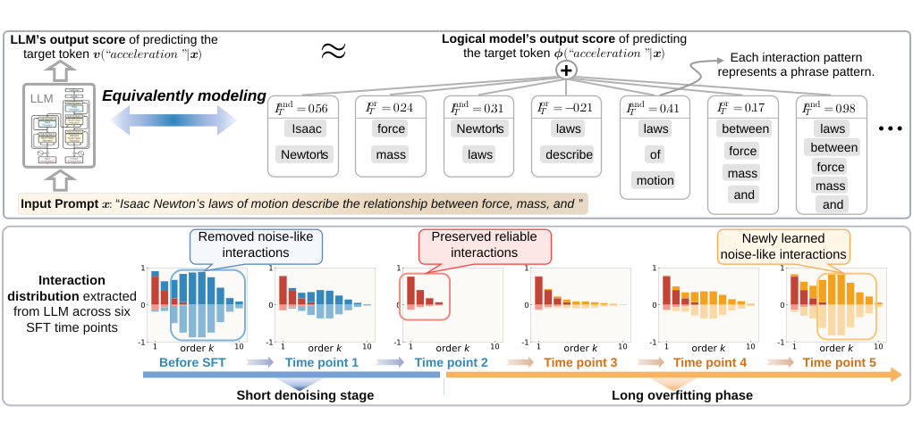
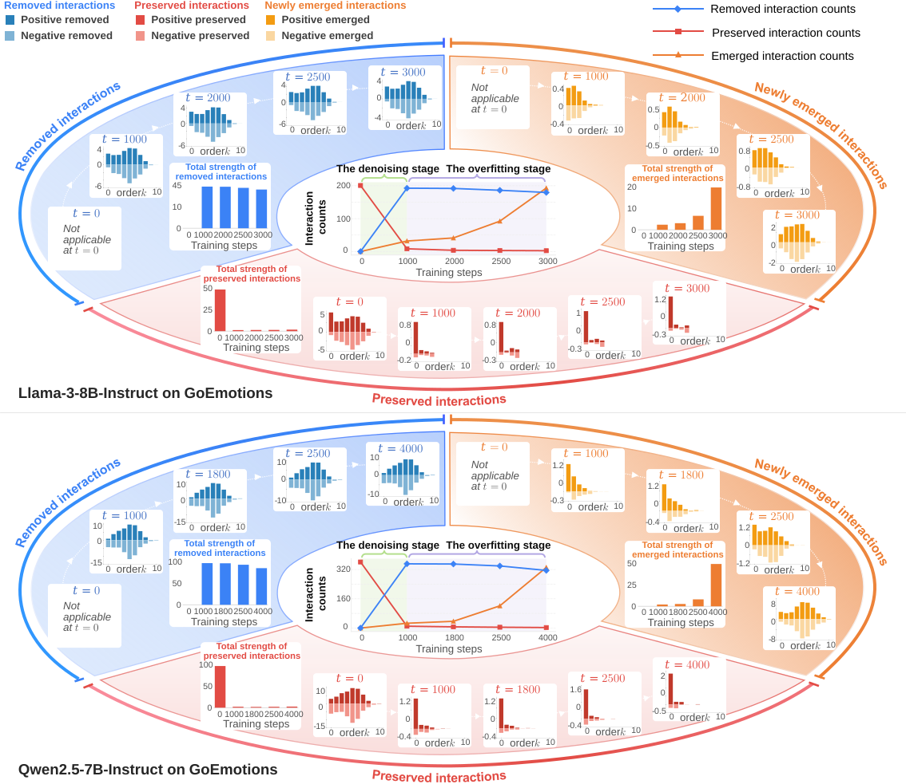
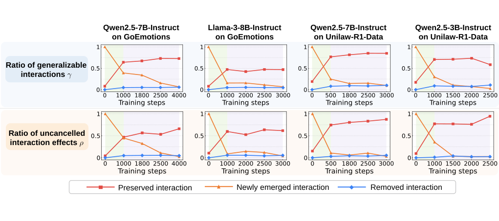

Reconciling Contradictory Views on the Effectiveness of SFT in LLMs
An interaction-based perspective explaining why SFT can help LLMs briefly through denoising, but may later introduce overfitted interaction patterns.
Overview

This work studies why supervised fine-tuning can be effective in some LLM settings but inconsistent or even harmful in others. We analyze the evolution of interactions between input variables during SFT.
Key Findings
SFT mainly removes noise-like interactions
LLMs rarely learn reliable new interactions during SFT; the dominant effect is removing noise-like interaction patterns already present in the model.
The denoising stage is extremely brief
After this short useful stage, continued fine-tuning leads the model to learn numerous overfitted interaction patterns.
Interaction Evolution


Method
AND-OR interactions are widely regarded as primitive inference patterns encoded by LLMs. We therefore track the distribution changes of removed, newly emerged, and preserved interactions, as well as changes in their representation quality, to examine the gains and losses in LLM representations throughout SFT.
Citation
???